"No traemos la medicina. La medicina ya estaba — orbitando — esperando que el cuerpo se siente y la escuche. Mi trabajo es sostener el silencio para que ese río se vuelva audible."
Siete formatos. Una sola escucha.
World music en vivo · 20+ instrumentos · cuencos de cristal, gongs, didgeridoo, sitar, instrumentos prehispánicos, drones, voz — tejido en vivo con live looping.
Contención plena con música en vivo, integración y cuidado del campo.
Retiro insignia de 7 días en TOJI — las 4 Geometrías de Viento, Tierra, Agua y Fuego.
El sonido no es solo lo que escuchamos. Es la forma en que el universo se ordena a sí mismo — desde la resonancia Schumann de la Tierra hasta las geometrías de las frecuencias planetarias.
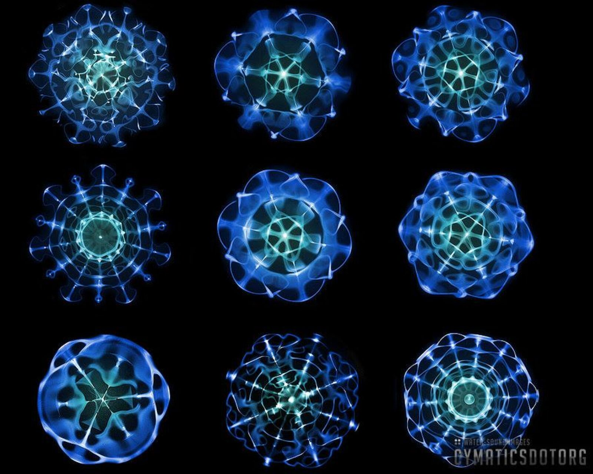
El agua hecha geometría por la voz del sonido.
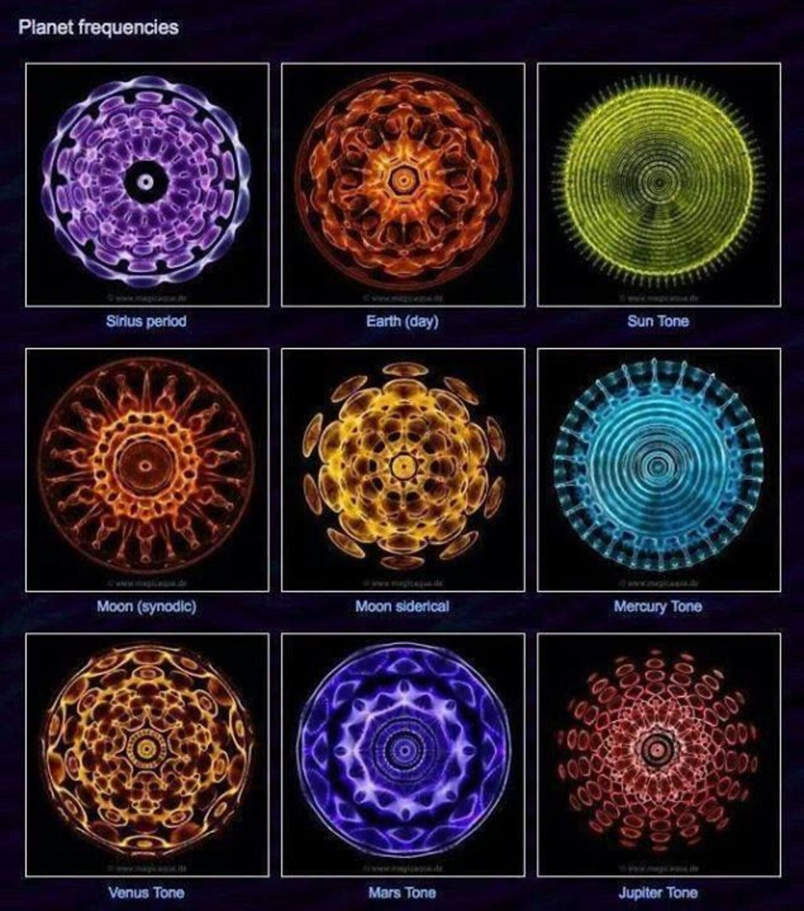
Cada planeta canta. La cimática lo dibuja.
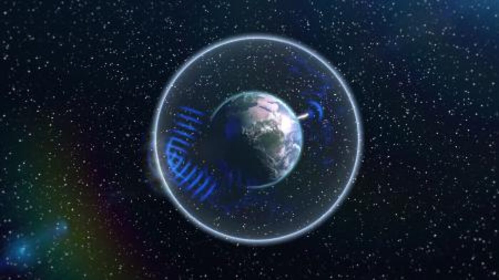
7.83 Hz · el latido de la Tierra · la nota base del cuerpo.
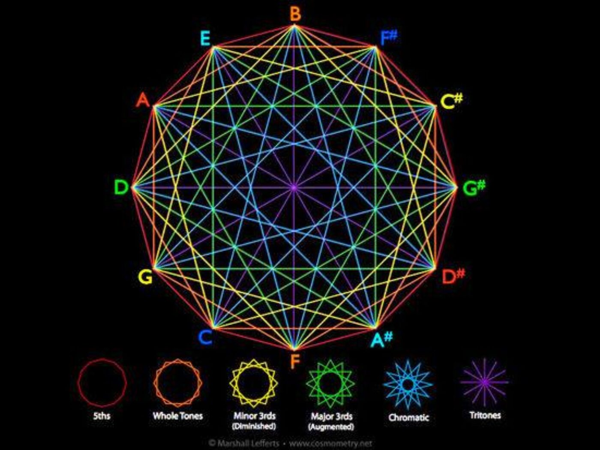
Las notas musicales son distancias sagradas.
Costa Rica · Facilitador ceremonial · Músico · Caminante de los caminos rojos.
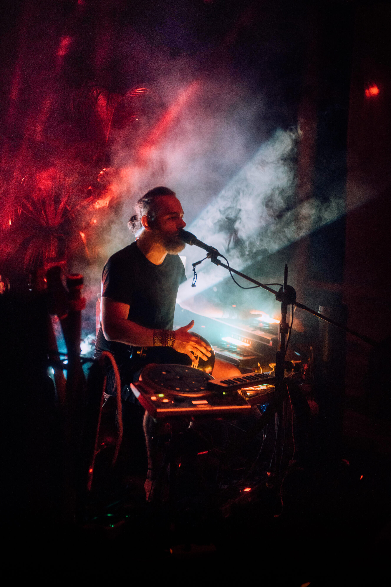
Empecé con los temazcales hace 26 años. Hace 10, mi camino se enfocó plenamente en la medicina — no como estudiante de una escuela, sino como caminante de los lugares donde estas prácticas nacieron.
He hecho 8 viajes al Amazonas viviendo con las tribus donde el kambo originalmente vive, 5 viajes a comunidades del desierto de Sonora en México, 4 búsquedas de visión y 3 danzas del sol. Mi música sale del mismo lugar — de las ceremonias, no de un estudio.
"Los certificados no abren los caminos. El tiempo, el respeto y la presencia con los abuelos sí."
Cada presentación es autosuficiente. El centro pone el espacio. Yo pongo todo lo demás.
Siete formatos. Todos con linaje. Todos con presencia plena.
Inmersión sonora ceremonial con más de 20 instrumentos del mundo: cuencos de cristal, gongs, didgeridoo, sitar, bansuri, instrumentos prehispánicos (huehuetl, teponaztli, ocarinas, zumbadores), djembe, kalimba, drones de overtone, voz — todo tejido en vivo con live looping y luz programada. No es música de fondo. Es un campo sonoro para entrar.
Apertura del corazón con cacao ceremonial seguido de un journey sonoro completo. 3 horas. Ideal como apertura o cierre de un retiro.
Contención ceremonial plena con música en vivo y trabajo con el campo. Integración antes y después de la ceremonia.
Trabajo con la medicina del kambo (sapo amazónico) con permiso directo de los chamanes de la Amazonía donde esta medicina vive originalmente.
26 años facilitando el camino del temazcal. Ceremonia ancestral de purificación, oración y renacimiento.
Retiro insignia de 7 días basado en cosmología tolteca — las 4 Geometrías de los elementos (Viento, Tierra, Agua, Fuego), trabajo somático, sonido, ceremonia, temazcal de apertura y cierre, cacao + sound journey, integración. Co-creado con TOJI Retreat Center.
Workshops independientes de 3–4 horas: una geometría (Viento, Tierra, Agua o Fuego) + práctica corporal + cierre sonoro.
Colaboro con centros de retiro en Costa Rica y la región como facilitador, sound healer en residencia o co-creador de retiros insignia.
Sound journey, temazcal o ceremonia integrada al programa que ya está corriendo en el centro. Llego con todo el equipo.
Facilitación recurrente cada mes o trimestre. Construyo audiencia con el centro y genero fidelización.
Diseño y operación del retiro Espejo Humeante o un programa custom como producto premium del centro. Modelo de revenue share.
El centro solo aporta el espacio. Yo traigo todo lo demás:
Sistema profesional escalable según tamaño del grupo.
Diseño de iluminación ceremonial.
Sintetizadores, controladores, 20+ instrumentos del mundo.
Materiales para temazcal, kambo, ceremonia. Linaje y permiso directo.
¿Te interesa explorar una colaboración?
ConversemosEl sonido nace del río que ya estaba corriendo. Aquí algunas piezas y momentos.
Selección de tracks y registros de ceremonias.
El sonido visto · el sonido escuchado · el sonido sentido.
9 frecuencias en agua
Sirius, Tierra, Sol, Mercurio, Venus, Marte…
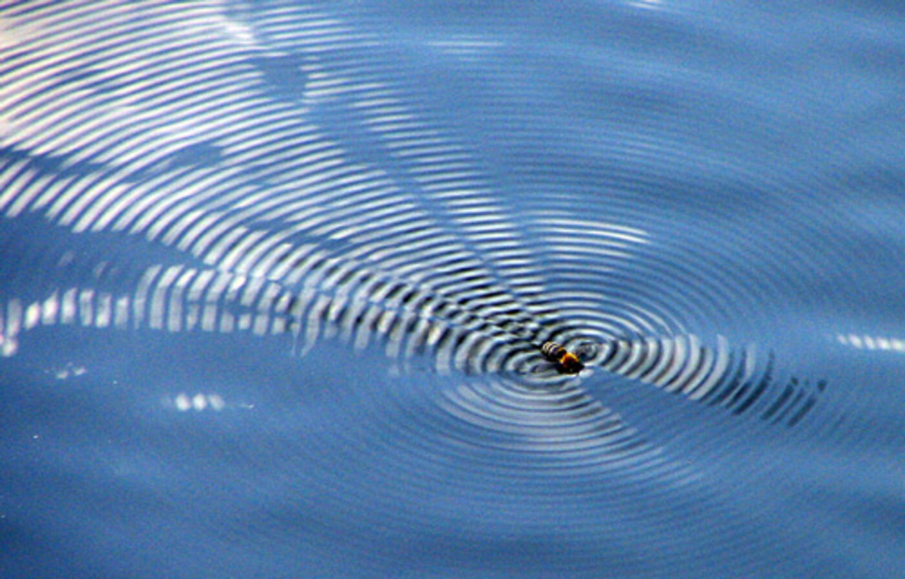
El patrón ya estaba ahí.
La nota base del planeta.
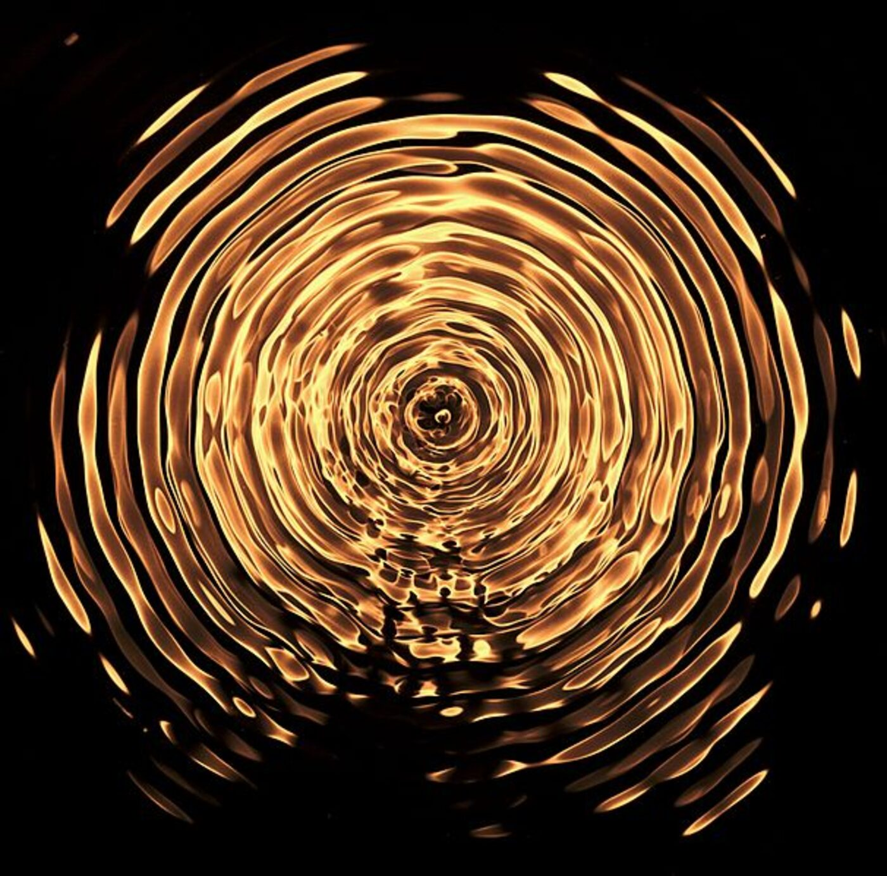
11 Hz · oro líquido.
Las notas son distancias.
Momentos del río corriendo.
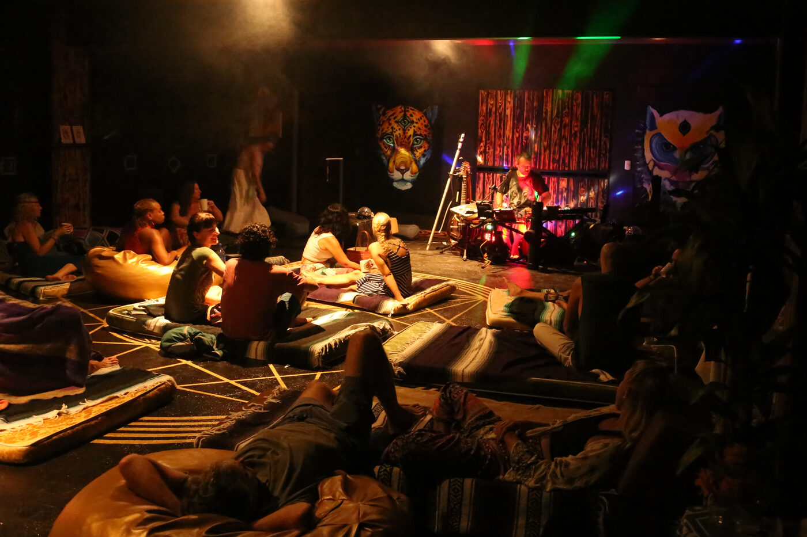
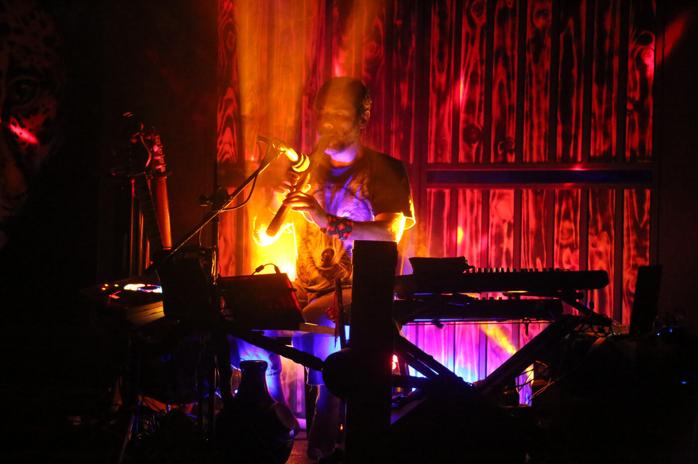
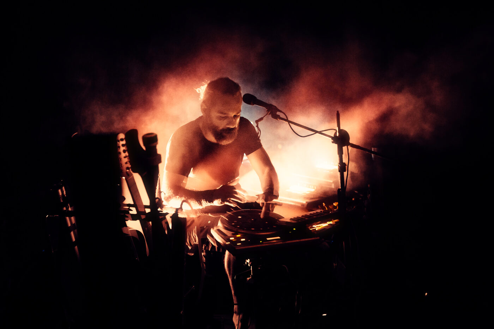
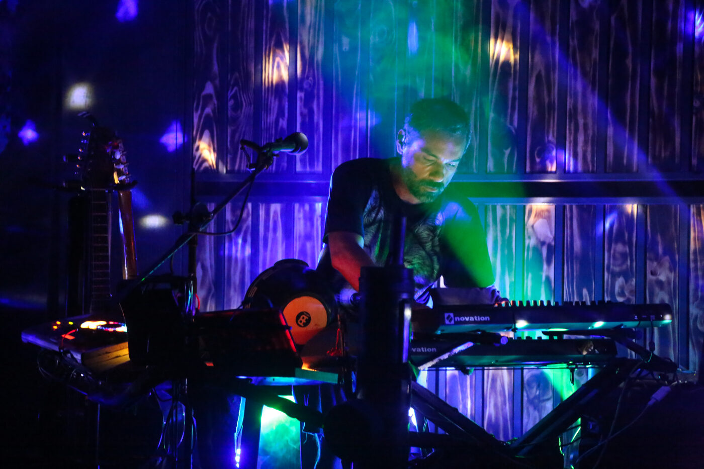
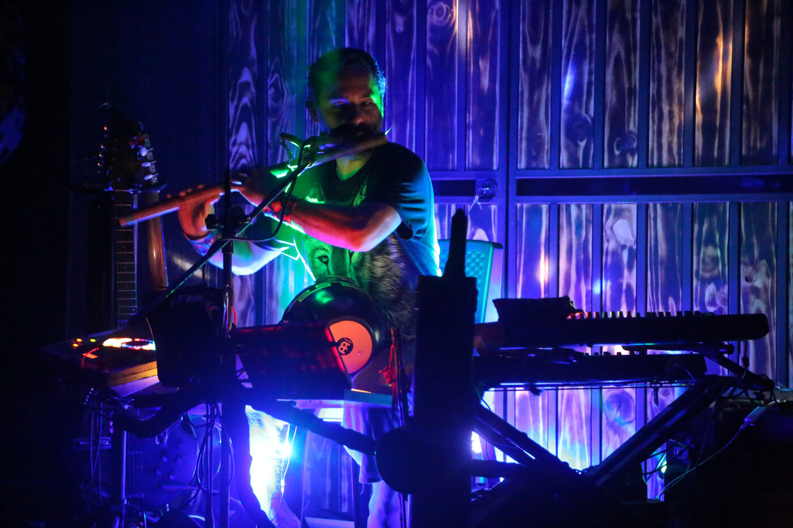
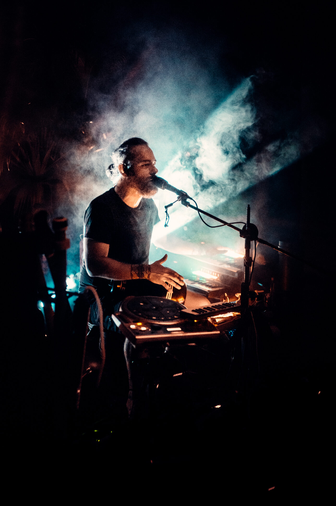
Para retreat centers, organizaciones, eventos y trabajo individual.